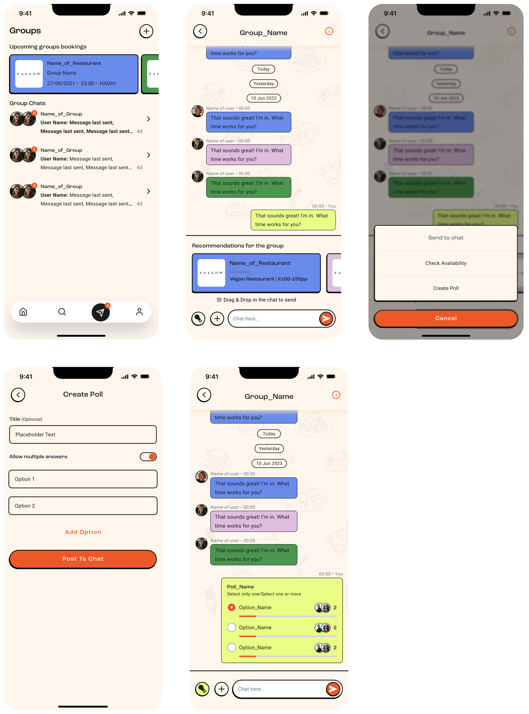
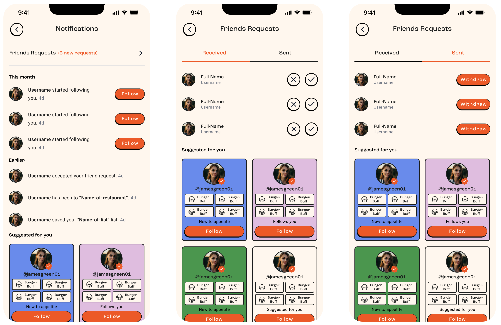
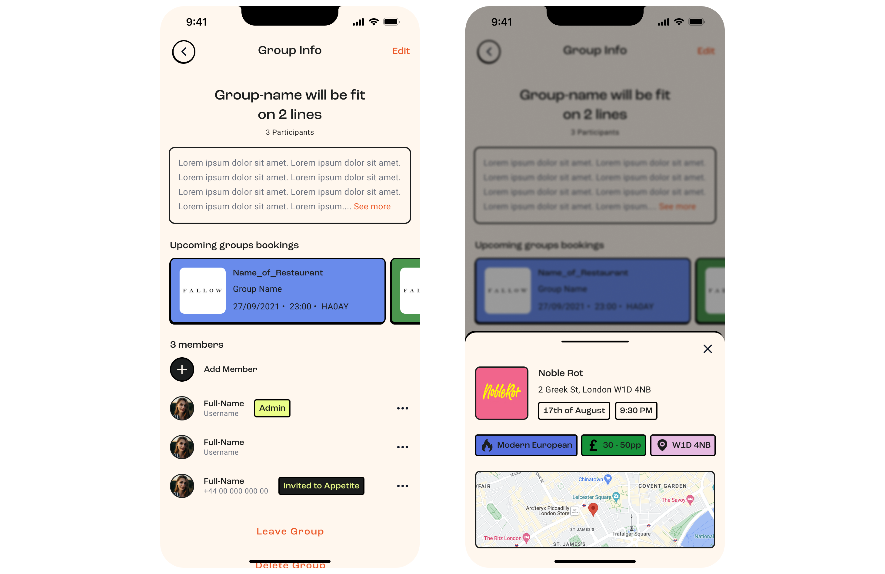
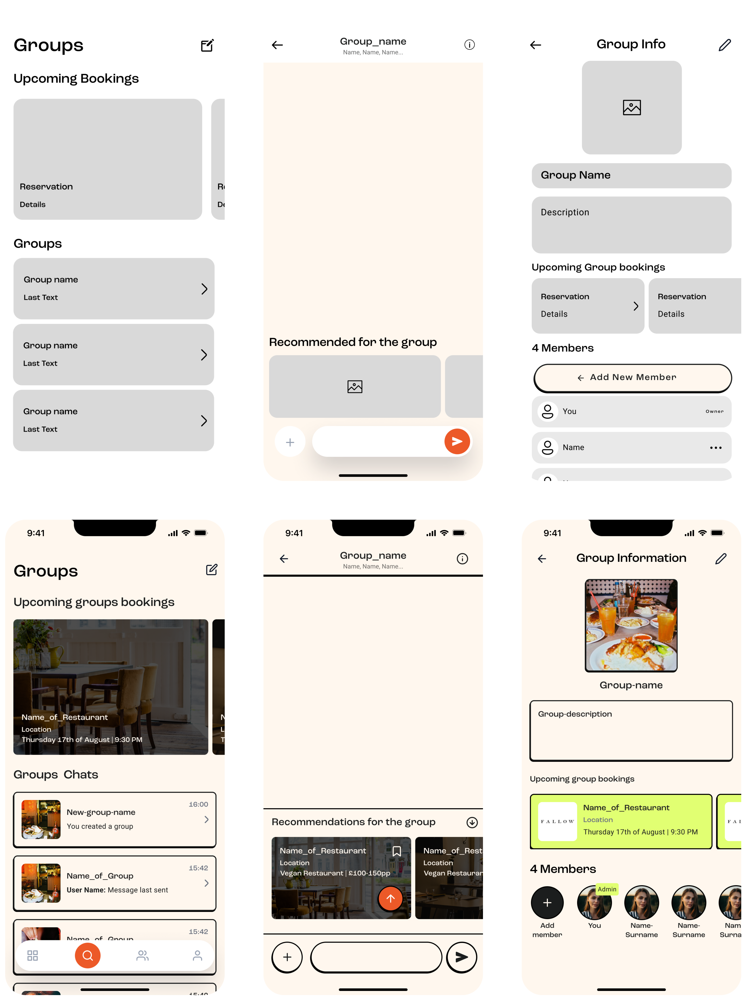

Dine with friends
Social interaction flows
Appetite, September 2023
Background
friends, and save favorite places. However, user navigation and interaction within the app need improvement to enhance the overall user experience.
Problem
Users face several navigation and interaction issues within Appetite. The chat function is not prominently displayed and is often mistaken for a support chat. Viewing friend requests and recent notifications is difficult due to the lack of a centralized notification section. Lists provide redundant information, making it challenging for users to see all restaurant lists efficiently. Bookings are not effectively tracked, and the liked section lacks proper organization. Additionally, the actions users can perform, such as following or befriending others, are not clearly differentiated.
Solution
We improved Appetite by making the chat function more prominent and group-specific, introducing a centralized notification section, consolidating restaurant lists, and isolating bookings for better tracking. The liked section was organized for easier access, and we clarified the actions for following or befriending others.
Responsibilities
UX/UI Designer
Timeline and process
2 months, pushed in September
Team
Me
Judd Reichman - Product Owner
Shabbir Hassan - Senior UX/UI Designer
Suraj - Tech Lead
Highlights

Share recommendations directly in groups, tailored to all members' preferences.
Create group polls to gather preferences on dining options.


Check all members' availability to schedule a reservation seamlessly, making it easy to find a time that works for everyone.
Add or invite members to join the group, expanding your circle and enhancing the collaborative planning experience.


Check the lists of your favorite places and upcoming bookings easily in the profile section, ensuring you always have quick access to your dining plans.
Design principles
The guiding principles throughout the project, that will be explained further below.

Simplicity and clarity
Control & Customisation

Seamless
Simplicity and clarity
The profile section was optimized for quick access to favorite places
and upcoming bookings, ensuring users could easily manage their preferences.
Previously, lists were separated based on whether they were created by the
user or others, but this was unnecessary. Users preferred having all lists
displayed together, regardless of the creator. Additionally, a dedicated
booking section was introduced, as it is crucial for users to keep track
of their reservations without losing any.
In the groups section, we improved the chat function's visibility and relevance, making it clear that it is specific to each group. Additionally, we introduced functionalities such as creating group polls for dining options and checking members' availability for reservations.
These changes aimed to reduce clutter, provide user control and customization, ensure seamless integration, and maintain consistent design patterns throughout the app.
Control
Control in the Appetite product was significantly enhanced by the introduction of a centralized notification center. This feature allowed users to easily manage and review all their activities in one place, including friend requests, group updates, and dining reservations. By consolidating notifications, users could stay informed and make decisions quickly, ensuring they never missed important updates and maintained full control over their interactions and plans within the app.

Seamless
Users could effortlessly see and share restaurant recommendations directly within groups, ensuring that all members could view and discuss options without leaving the app.
All group bookings would be displayed in the group detail section, allowing all users to easily keep track and stay informed about upcoming reservations.

Discovery & definition
During the discovery and definition phase of Appetite, we collected more than 200 tickets of feedback from our beta users and identified key user needs and issues:
- Users needed a clear and intuitive chat function within groups.
- A centralized notification section to manage all activities was crucial to our users.
- Users preferred all restaurant lists to be combined for easier viewing.
- A dedicated section for bookings was necessary for better management.
- Quick access to favorite places and upcoming bookings was essential.
- Effortless sharing of restaurant recommendations within groups.

Explorations
Designing for developers is a challenging task that involves considerable trial and error. In this project, we explored various design options, repeatedly reviewing them with engineers to ensure the best possible experience that seamlessly integrates into the developers' workflow.
Challenges
The main challenge was designing for a broader audience, incorporating feedback from beta users. Addressing diverse user needs and preferences required careful consideration and balancing various requirements. We had to ensure the design was intuitive and accessible for all users, while still being comprehensive enough to meet advanced needs